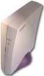

Linux driver for :
Alcatel
Dynamite USB modem
Currently supported
ADSL modem :
 |
 |
|||
| Zyxel Prestige 630-11 | Asus aam600ug | Digicom MichelAngelo USB A | Topcom Webracer 851 | PROLiNK Hurricane 8000 |
Spanish - English - French - Italian
Spanish - English - French - Italian
SF Project Page - AmedynWiki href="http://sourceforge.net/projects/zyxel630-11/">SF Project Page